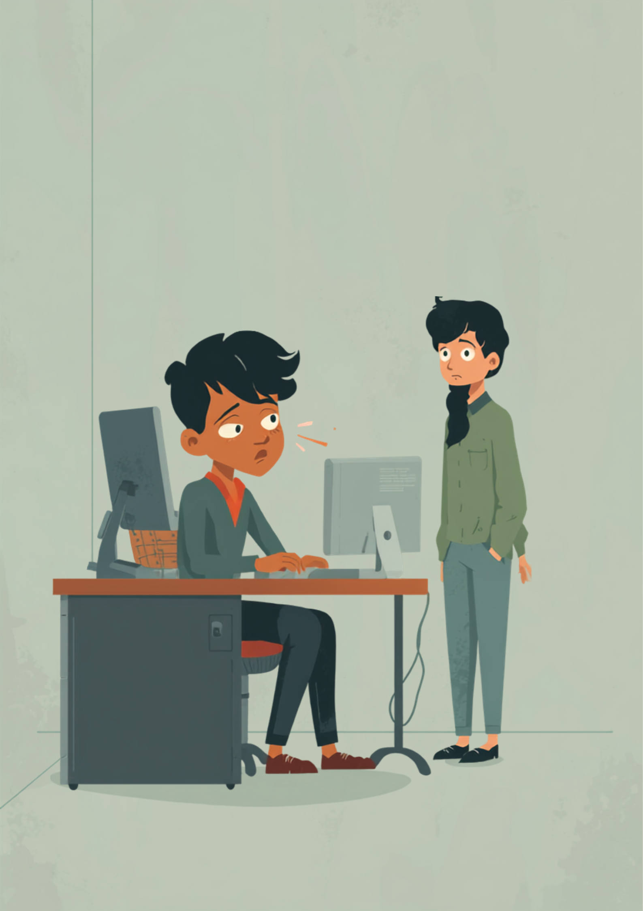
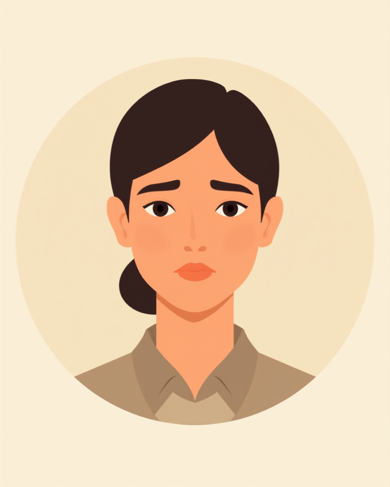

「ここの数字、間違ってるよ」。それだけの一言で、目の奥がじわっと熱くなる。怒られたわけじゃないと頭では分かっているのに、涙腺が言うことを聞かない。慌てて下を向いても、上司の方が先に気づいて「え、そんな怒ってないよ」と困った顔をする。その言葉で、よけいに涙が止まらなくなる。この悪循環に心当たりのある方へ。この記事では、仕事中に涙があふれてしまう特性と、その場でできること、周囲との付き合い方を当事者の声をもとに整理しました（2026年9月時点の情報です）。
PR



怒られたわけじゃない。それなのに、涙の方が先に出てしまう
「そんな怒ってないから」で、よけいに涙が止まらなくなる

指摘や否定的な言葉に対して、涙という形で反応しやすい方がいます。これは性格が弱いということではなく、感情の表れ方の一つの特性だとされています。まめざる
注意されたわけでもない、軽い指摘だっただけなのに、涙が先に出てしまう。内容自体はもう頭に入っている。落ち込んでいるというより、むしろ「直さなきゃ」と冷静に考えている。それなのに、体の反応だけが先に動いて、目の奥から勝手にあふれてくる。
厄介なのは、その涙が周囲を戸惑わせてしまうことだ。指摘した側は「そんなに大ごとにするつもりはなかった」と焦り、「そんな怒ってないから」「そこまで気にしなくていいよ」とフォローしようとする。ところがそのフォローの言葉こそが、「自分が大ごとにしてしまった」という恥ずかしさに火をつけて、涙をさらに引き出してしまう。慌てるほど、涙は止まらなくなる。
!
涙の出やすさや、そのきっかけになる場面には個人差があります。この記事で挙げる内容がそのまま当てはまるとは限らないため、つらさが続く場合は自己判断せず医療機関や支援機関に相談することをお勧めします。
「正直に言うと、上司に『この仕訳、ここ違うよ』って言われただけで、目の奥がぶわっと熱くなって。3秒くらいで涙目になるので、いつも下向いてパソコンの画面見つめて誤魔化してます。指摘された内容はその日のうちに直せる程度の些細なミスなのに、涙だけが先に出てくるのがほんとに意味不明で、自己嫌悪がすごいです。半年前から『また泣きそう』って思うだけで動悸がするようになって、それも含めて誰かに相談したいけどなかなか言い出せません。」
20代・女性（ADHD・経理職）
相談の一コマ

相談者
実際に怒られたわけじゃないのに、指摘されただけで涙が出てきてしまって。周りからは「そんな大げさな」って思われそうで、隠そうとすればするほど逆効果になるんです。
まめざる
涙が出ることと、実際に落ち込んでいる深さは、必ずしも比例しないと言われています。「大げさ」と思われることを、そこまで心配しなくても大丈夫だと思いますよ。
相談者
そうなんですか…。でも会議中とかだと、さすがにその場でどうしたらいいか分からなくて。
まめざる
その場でできる工夫はいくつかあります。席を立たずにできることと、一度その場を離れる場合の伝え方を、このあと一緒に見ていきましょう。
指摘の重さより、自分の余裕。涙が出やすい場面には傾向がある
大きく怒られたときより、なんでもない一言の方が涙が出る。指摘の内容そのものよりも、そのとき自分にどれだけ余裕があったかが関係している場合があるとされています。睡眠不足が続いていたり、その日すでに何度も小さな失敗が重なっていたりすると、指摘の大きさとは関係なく涙腺が反応しやすくなる、という傾向です。
涙の出やすさを左右するのは、指摘の内容より「そのときの自分の状態」
i
「昨日は同じことを言われても平気だったのに、今日は涙が出た」という日による差は、決して気まぐれではなく、その日の疲労や睡眠、前後の出来事が影響している場合があるとされています。
背景にあるとされる特性の一例
ADHDのある方の中には、否定や拒否と受け取れる言葉に人一倍強く反応しやすい傾向を持つ方がいるとされ、これはRSD（Rejection Sensitive Dysphoria）と呼ばれることがあります。また、HSP（Highly Sensitive Person）と呼ばれる、感覚や感情の刺激を強く受け取りやすい気質を持つ方にも、涙もろさが表れやすいという見方があります。ただしこれらは2026年9月時点で日本の診断基準に正式な病名として定められているものではなく、涙もろさだけで特定の診断がつくものでもない点には注意が必要です。
「男なのに泣くとか情けないって、自分で自分にずっと言い聞かせてました。取引先に怒られたわけでもなく、先輩に『ここもう少し丁寧に』って言われただけなのに、トイレに駆け込んで5分くらい一人で落ち着かせてから戻ったことが何度もあります。同僚には体調不良って言ってごまかしてますけど、これがあと何年続くのか考えると正直しんどいです。」
30代・男性（HSP気質・営業職）
その場でできること、泣いてしまった後にできること
涙を完全に止めようとするより、「出てしまってもいい状況を作っておく」方が楽になる場合があります。次のような工夫を、自分に合いそうなものから試してみてください。まめざる
- 「少しお時間いただいていいですか」と一言断ってから、化粧室や給湯室など短時間離れられる場所に移動する
- 手元の資料やパソコンの画面に視線を落とし、メモを取るふりをして時間を稼ぐ
- あらかじめ信頼できる上司に「指摘を受けると涙が出やすいことがある」と伝えておき、驚かせない
- 涙が出たあとは「お見苦しいところをすみません、内容は理解しています」と一言添えて仕事に戻る
大切なのは、涙が出たこと自体を大きな失敗として引きずらないことです。指摘の内容を理解し、必要な対応ができていれば、涙が出たかどうかは業務の評価とは本来別の話のはずです。とはいえ、それを自分一人で納得するのは簡単ではないため、次の章では周囲への伝え方と、頼れる相談先を整理します。
一人で抱えず、話せる場所を持っておく
周囲にどこまで伝えるか
涙もろさの背景や特性の名前まで詳しく説明する必要はありません。業務に支障が出ないことが伝わる範囲で、「指摘を受けると涙が出やすいことがありますが、内容自体は真剣に受け止めています」といった一言があるだけで、周囲の戸惑いが減るという声もあります。伝える相手は、直属の上司や信頼できる先輩など、限られた範囲からで十分です。
相談できる窓口
- 社内に選任されている産業医（50人以上の事業場に選任義務あり）
- 心療内科・精神科（涙もろさの背景に気になる特性がある場合）
- 就労移行支援事業所（感情のコントロールを含めた働き方の相談）
- 家族や信頼できる友人など、業務外で安心して話せる相手
涙の出やすさや、その背景にある特性の現れ方には個人差があります。この記事の内容がそのまま当てはまるとは限らないため、つらさが続く場合は自己判断せず医療機関や支援機関にご相談ください（2026年9月時点の情報です）。
涙が出やすいことは、性格の弱さでも、仕事への姿勢の甘さでもありません。「出てしまってもいい状況」を少しずつ整えていくことは、決して大袈裟なことではありません。
よくある質問
Q. 仕事中に涙が出やすいのは、性格が弱いからですか？
性格の弱さとは言い切れないとされています。感情の表現のしやすさには個人差があり、指摘や否定的な言葉に人一倍反応しやすい特性を持つ方もいます。涙が出ることと、実際の落ち込みの深さが必ずしも比例するわけではないという見方もあります。
Q. 会議中に涙が出そうになったとき、その場でできることはありますか？
深呼吸をしながら視線を少し下にずらす、手元の資料に集中するふりをするなど、その場でできる工夫はあるとされています。難しい場合は「少しお時間いただいていいですか」と一言断ってその場を離れる方法もあります。
Q. 涙もろいのは発達障害や精神疾患のサインですか？
涙もろさだけで特定の診断がつくものではないとされています。ADHDのある方に見られることがある拒否に敏感に反応しやすい特性や、HSP（繊細な気質）など、さまざまな背景が関係している場合があります。気になる場合は自己判断せず医療機関にご相談ください。
Q. 職場に「涙もろい」ことをどう伝えればいいですか？
症状の背景まで詳しく説明する必要はないとされています。「指摘を受けると涙が出やすいことがありますが、内容自体は真剣に受け止めています」など、業務に支障が出ないことが伝わる範囲で共有する方法があります。
Q. 一人で抱えるのがつらいとき、どこに相談できますか？
社内に産業医が選任されている場合は健康面の相談ができます。就労移行支援事業所や、mimemimeのような相談窓口でも、感情のコントロールに関する悩みを含めて話を聞いてもらうことができます。
涙は、器が満杯になったときにあふれるもの。中身が悪いわけではない
この記事に、聞いてみたいことはありますか？
「自分の場合はどうなんだろう」と思ったことを、気軽に書いてみてください。いただいた質問は個別にお返事したうえで、匿名で記事にすることがあります。
PR


一人で抱え込む前に、今の気持ちを話してみませんか
「まだ迷っている」段階でも大丈夫です。mimemimeの無料相談は、今の状況の整理から一緒に始められます。
無料で話してみる
おのざる
mimemime代表。就労支援の現場経験をもとに、障がいのある方の働く不安に寄り添う記事を執筆。